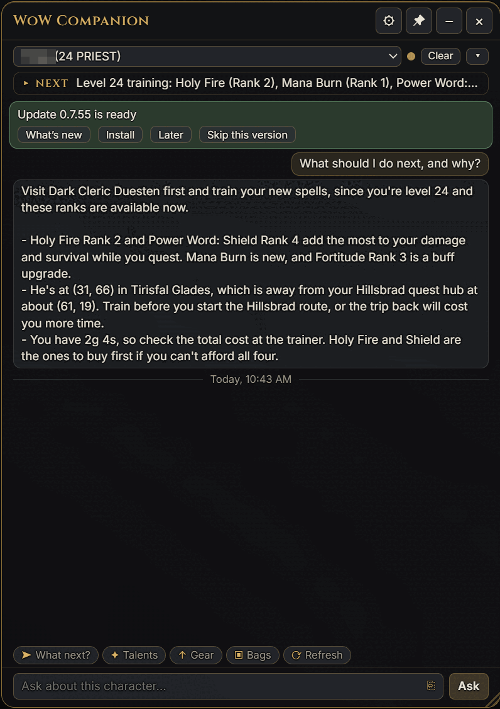
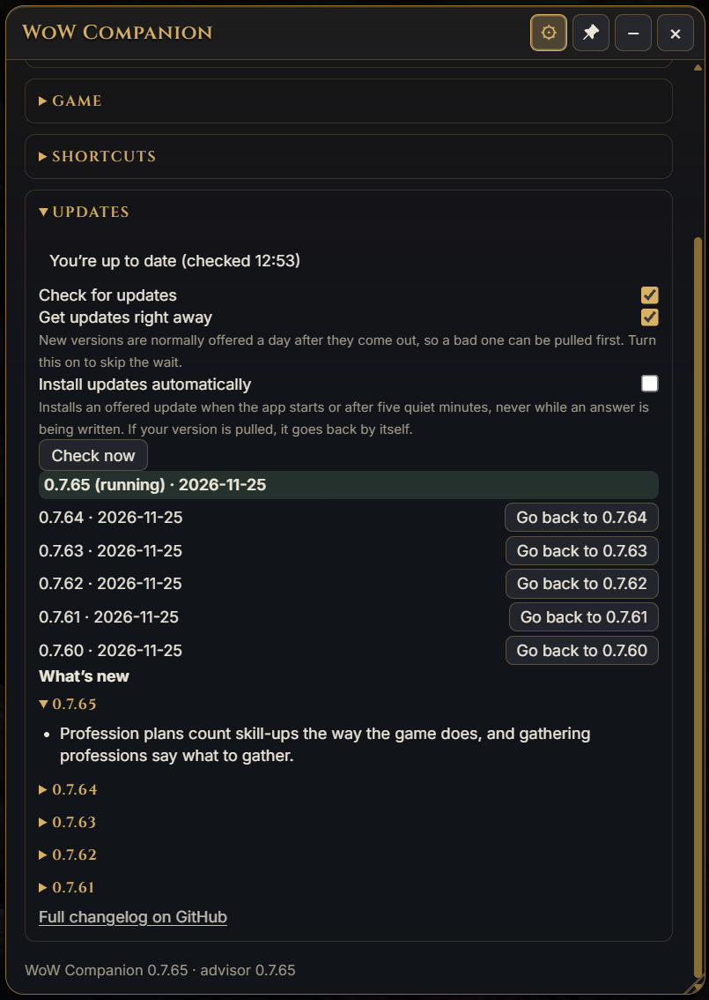

Updates and feedback
The app updates itself. You can wait, skip an update or go back.
How updates reach you


- The app checks GitHub when it starts, every four hours, and when your PC wakes up. You can turn this off with Check for updates in Settings > Updates, or press Check now.
- A new version is offered a day after it comes out. That day lets us pull a bad version before most people see it. To skip the wait, turn on Get updates right away in Settings > Updates.
- The offer appears in the app's chat as "Update … is ready", with buttons to read What's new and Install, or to put it off with Later or Skip this version.
- Install downloads the installer, checks it against the published checksum, saves a copy of your settings (the last three are kept) and replaces the app in place. If the check fails, nothing is installed.
- Install updates automatically in Settings > Updates is off until you turn it on. When it is on, an offered update, and a new version of the in-game addon, installs when the app starts or after five quiet minutes, never while an answer is being written. If your version is pulled, the app goes back by itself.
- Later hides the offer for a day. Skip this version hides it for good, and you'll be offered the next one.
Going back


- If the version you're running is later found to have a problem, a red banner says so and offers to go back to the last good one, in one click.
- You can also go back yourself. Settings > Updates lists the version you run and up to five others. Press Go back to, next to the one you want. The addon has its own line there, with Update addon and the same Go back to buttons.
The addon and the game data
- The addon updates through the app. The setup checklist and Settings > Updates can install or update it. After an addon update the app tells you what to do. Usually it says to type
/reloadin the game. If the update adds new files, it says to quit the game completely and start it again. - The game data is a small file the app downloads from GitHub. It checks for a newer one when it starts, and about once a day while the app is running.
What changed in each version
- In the app: the What's new button, on the update notices and in Settings > Updates, lists the release notes for the app and the addon, newest first. Releases you haven't read come first, and a line marks where the ones you've already seen begin. When nothing is new, it says You're up to date. Older changes are on the release page.
- On GitHub: the app's CHANGELOG lists every version. The addon's notes show in the game as a one-time "What's new" box after an update, and on its releases page.
Send feedback
Use the feedback form on GitHub. It asks what you tried, what happened and what you expected. It's free, and needs a GitHub account. Ideas are as welcome as problems.
Before you attach a screenshot, crop or blur your account name, your character's name and other players' names.